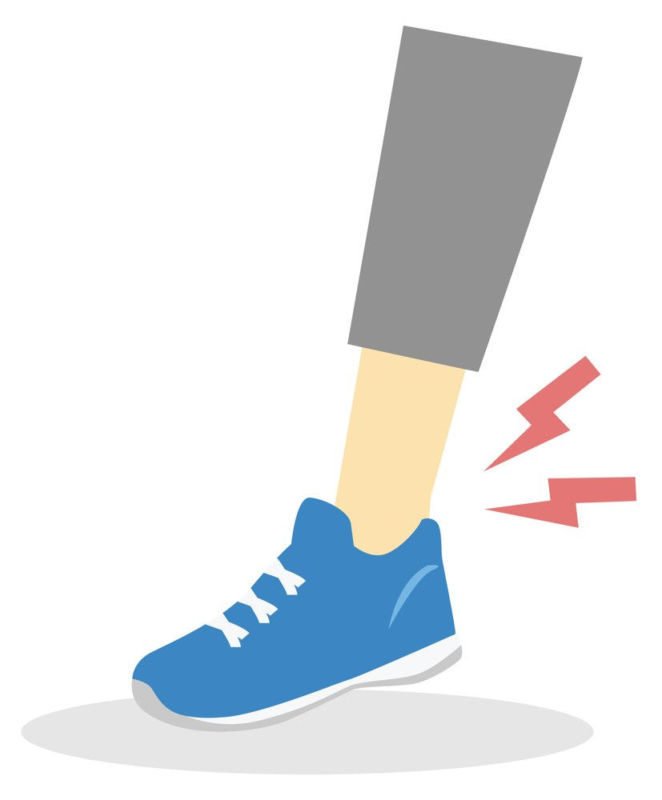

季節のカラダ
春のスポーツを始める前に。ケガをしない準備のコツ

- 冬の間に、筋力やカラダのやわらかさは落ちています
- 運動は冬の前の半分くらいから、2〜3週間かけて戻します
- 運動の前にカラダを温め、体幹を使いましょう
雪がとけて暖かくなってくると、ウォーキングやランニング、ゴルフ、野球、サッカーなど、外でのスポーツを再開する方が増えてきます。
けれど、冬の間に動く量が減っていたカラダで、いきなり以前と同じように動くと、ケガにつながることがあります。毎年この時期は、肉離れや捻挫、腰や膝の痛みで来院される方が増えます。
春先にケガが増える理由
- 冬の間に筋力やカラダのやわらかさが落ちている
外で動く機会が減ると、筋肉は弱くなり、かたくなります。 - 「去年と同じ」つもりで動いてしまう
頭の中のイメージと、今のカラダの状態に差があると、無理な動きをしてしまいます。 - 朝晩はまだ寒い
気温が低いと筋肉がかたく、急に走ったり、ひねったりしたときに痛めやすくなります。
ポイント
まずは、今のご自分のカラダの状態を知ってから始めることが、ケガを防ぐ近道です。
始めどきの目安
雪どけ直後は、日かげや朝晩に凍った道が残っています。外でのランニングなどは、路面が乾いてから始めると安心です。
始めるときは、運動の時間や強さを冬の前の半分くらいにして、2〜3週間かけて少しずつ戻していくのが目安です。最初の数回は、「少し物足りない」くらいでやめておきましょう。

ケガをしないための準備
- 運動の前にカラダを温める
その場で足踏みをしたり、肩や股関節をゆっくり回したりして、カラダを温めてから始めましょう。 - 体幹を使う
下腹を軽く引きこみ、その力をみぞおちのあたりまで上げるイメージで保つと、胸が自然に開きます。体幹が安定すると、手足に負担が集まりにくくなります。 - 運動のあとはカラダを落ち着かせる
運動のあとは、ゆっくり歩いたり、軽くカラダを伸ばしたりしてから終わりましょう。 - 痛みが出たら休む
「少し痛いけど続けよう」は、ケガを大きくするもとです。痛みが出たら、その日は休みましょう。
もしケガをしてしまったら
- 痛めた所は冷やして、無理に動かさない
- 腫れがひどい、形が変わって見えるときは医療機関へ
- 捻挫や肉離れは、早めにご相談ください
スポーツ中のケガは、健康保険の対象になることがあります。くわしくはスポーツのケガのページをご覧ください。
- まずは今のカラダの状態を知ってから始めましょう
- 最初の数回は、少し物足りないくらいで十分です
- 捻挫や肉離れは、早めにご相談ください